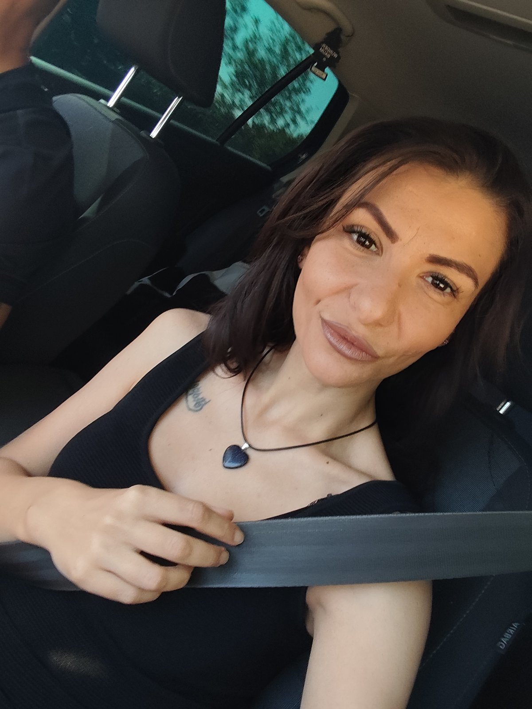

Нежност, стил и светлина във всеки поглед
„Най-красивите места на света са онези, в които се усмихваш до мен.“
Този интерактивен портрет е посветен на жената, която превръща всеки ден в празник на топлината и красотата. Тук всеки кадър носи своята емоция — от тихите сутрини и слънчевите брегове до уютните вечери у дома.
Кликнете върху всяко заглавие или текст със символ за редакция, за да добавите свое лично послание, спомен или посвещение — промените се запазват автоматично във Вашия браузър.
